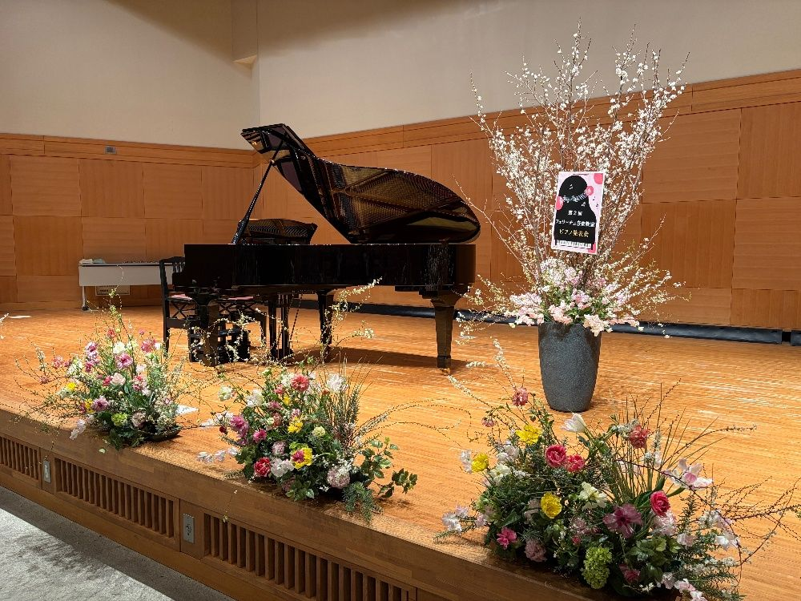
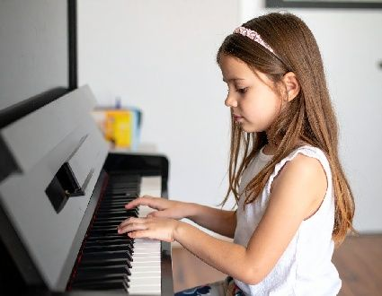
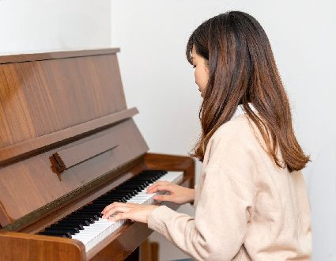

体の痛くない「脱力奏法」
人によって力が入る場所は違います。それをレッスンで気づき修正し、無理なく楽しく練習できるようお手伝いします。
Felice — “happy” in Italian
0歳からの音感教育と、大人のための脱力メソッド。
どんな世代でも楽しく弾けるピアノ教室です。

Concept
1歳から大人・シニアの方まで、レッスンを受けられます。
人によって力が入る場所は違います。それをレッスンで気づき修正し、無理なく楽しく練習できるようお手伝いします。
知育絶対音感や0歳からのベビリズムも開講。追加料金なしでレッスンプログラムを受けられます。
多くの方に挑戦していただきたいので、コンクール対応レッスンにも追加料金はいただいていません。
Course & Fee
当教室は、音楽を楽しむことを目的としています。初心者でも大丈夫です。
from 0 years
知育・絵本・歌・情操教育。太鼓やシンバル、スカーフ、おはじきなどの知育教材も使います。

from 2 years
知育絶対音感・ピアノ・歌・表現。バーナム、ピアノどりーむ、ぴよぴよピアノなど、レベルに合わせて選曲します。

Adults
脱力・奏法を中心に。ポップスは弾きたい曲をアレンジできます。女性限定（初対面の男性はオンラインで対応）。
For Nursery Teachers
童謡、伴奏、コードなど、和音の練習を中心に学びます。
※生徒さんが多いため、曜日・時間はご希望にそえない場合がございます。発表会は年に1回開催しています。
Instructor
フェリーチェ音楽教室主宰。「ピアノってこんなに楽しかったの？」と再発見できるようなお教室を目指しています。発表会では講師演奏としてショパンの幻想即興曲を演奏しました。
Schedule
| 時間 | 月 | 火 | 水 | 木 | 金 | 土 | 日 |
|---|---|---|---|---|---|---|---|
| 10:00〜12:00 | ○ | ○ | ○ | ○ | ○ | △ | △ |
| 16:00〜18:00 | × | × | × | × | × | △ | △ |
○ 受付中 △ ご相談ください × 満席 ／ 年末年始・祝日はお休みです。遅刻や欠席の際はお早めにご連絡ください。
※空き状況は変わります。最新の状況はお問い合わせください。
Free Trial
1レッスンを無料で体験できます。教室の雰囲気や講師との相性を確かめてください。
お問い合わせフォームよりお申し込みください。レッスン内容やお月謝など、気になることは何でもどうぞ。
個人レッスンでの体験、または見学のみも可能です。
当日お渡しする申込書にご記入のうえ、改めてご連絡ください。
Contact
初めての方は、お問い合わせフォームをご利用ください。